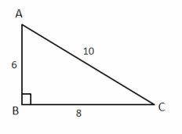
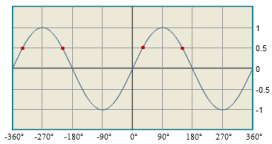

For every trigonometry function such as sin, there is an inverse function that works in reverse. These inverse functions have the same name but with 'arc' in front. So the inverse of sin is arcsin etc. When we see "arcsin A", we understand it as "the angle whose sin is A"
| sin30 = 0.5 | Means: The sine of 30 degrees is 0.5 |
| arcsin0.5 = 30 | Means: The angle whose sin is 0.5 is 30 degrees. |
| Function | Inverse function |
| sin | arcsin |
| cos | arccos |
| tan | arctan |
The inverses of sec,cot,csc are written in a similar way, but rarely used
You will always use a calculator to find the values of trig functions and their inverses. On a calculator the inverse buttons may be marked for example arcsin, asin, or sin-1.
(Be careful: The latter form - sin-1 - can be very misleading since raising something to the power negative one implies the reciprocal, which is not the same thing as the inverse function).
In a right triangle, when you know any two sides, you can use the inverse trig functions to find all the angles. In the figure below we are given the three sides. We can find the angles A,B,C

We know that the sine of an angle is the opposite over the hypotenuse. So in the above figure
Since the sin of C is known we use the inverse sin function to find the angle.
Since sinC = 0.6, then
We would say "C is the angle whose sin is 0.6".
Using a calculator we find that
So the angle C has a measure of 36.86°.
We know that cosine of an angle is adjacent over hypotenuse, so so The calculator tells us this is also 36.86°
Using the same idea, we know that the tangent function of an angle is opposite over adjacent, so so The calculator tells us this is 36.86°
So all three produce the same result, as they should. Use whichever function you like, depending on which sides you are given to start.
Recall that we can apply trig functions to any angle, including large and negative angles. But when we consider the inverse function we run into a problem.

What if we were asked to find the inverse sine of say 0.5? In other words, what angle has a sine of 0.5?
If we look at the curve above we see four angles whose sine is 0.5 (red dots). In fact, since the graph goes on forever in both directions, there are an infinite number of angles that have a sine of a 0.5.
(See Graph of the sine function).
To solve this problem, the range of inverse trig function are limited in such a way that the inverse functions is one-to-one, that is, there is only one result for each input value. The range can be different for each function, but as an example, the range of arcsin is conventionally limited to -90 to +90° or So if you were asked for the arcsin of say 0.5, the 'correct' result is 30° (sin30 = 0.5). But remember, that there are an infinite number of angles that have a sin of 0.5.